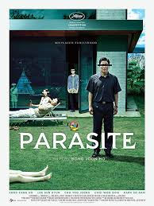

Parasite

Konusu
Parasite, sınıf çatışmasını konu alan Oscar ödüllü Kore filmi. Aşağı sınıftan bir ailenin, zengin ailenin hayatına sızmaya çalışırken gelişen olayları anlatır.
Yönetmen
Bong Joon-ho
Oyuncular
- Song Kang-ho - Kim Ki-taek
- Lee Sun-kyun - Park Dong-ik
- Cho Yeo-jeong - Choi Yeon-gyo
- Choi Woo-shik - Kim Ki-woo
Ödüller
4 Oscar, 6 Oscar adaylığı
IMDB Puanı
8.6 / 10